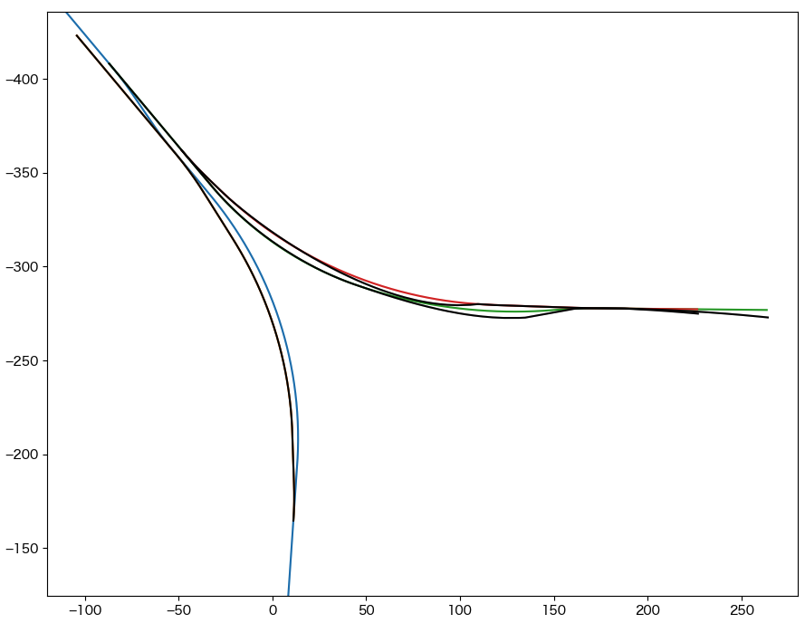
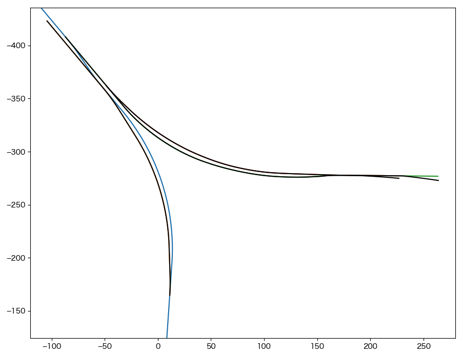

6. 他軌道構文の出力¶
メインウィンドウ右下の Generate ボタンをクリックすると、tateyama_up軌道を自軌道として各軌道を他軌道構文(Track)に変換する。
他軌道への変換結果はmain.cfgと同じディレクトリのresult以下に保存され、同時にプロットウィンドウに黒線で表示される。
{kind=link}
出力ファイル一覧
result/
tateyama_down_converted.txt
honsen_down_converted.txt
honsen_up_converted.txt
owntrack/
tateyama_up.txt
入力ファイルのtateyama_up.txtに対して、各々の距離程を[@TSUTSUJI_GENERAL]セクションのoffset_distanceだけシフトしたもの
6.1. supplemental_cpの設定¶
変換結果を見ると、honsen_up, honsen_down軌道について一部入力データからの乖離が大きい部分がある。
tsutsujiでは、入力軌道データの自軌道要素(Curve, Gradient)が存在する距離程の座標を抽出して他軌道構文に変換している。 このため、距離の長い曲線区間では距離程どうしの間隔が開くことがある。 また、変換しようとしている軌道と自軌道のなす角が開いている場合、相対半径によるTrack要素間の補間がうまく働かない場合が多い。
このような場合は、main.cfgファイルの該当する軌道セクションにsupplemental_cpを追加する。 supplemental_cpがセットされると、自軌道要素が存在する距離程に加えて、supplemental_cpで指定した距離程に対する座標を基に他軌道構文への変換を行う。
main.cfgを下記のように変更して、データリロードののちGenerateを実行すると、下図のように最終的な変換結果が得られる。
{kind=link}
...
[honsen_down]
file = honsen_down.txt
absolute_coordinate = False
parent_track = tateyama_up
origin_kilopost = 438
x = 0
y = 0
z = 0
angle = -180
endpoint = 400
supplemental_cp = 200, 250, 300, 350
[honsen_up]
file = honsen_up.txt
absolute_coordinate = False
parent_track = honsen_down
origin_kilopost = 60
x = 0
y = 0
z = 0
angle = 0
endpoint = 300
supplemental_cp = 100, 150, 200, 250
Note
supplemental_cpを追加することで破綻の少ない他軌道データが得られるが、ここにRepeater要素でレールオブジェクトを割り当てると、うまくspan, intervalを調整しない限り、結局は隙間だらけのレールが生まれてしまう。Tsutsuji上での変換結果だけにこだわらず、Bve Trainsim上で満足する結果が表示されるよう、変換結果を活用して欲しいと思う。
このチュートリアルは以上です。